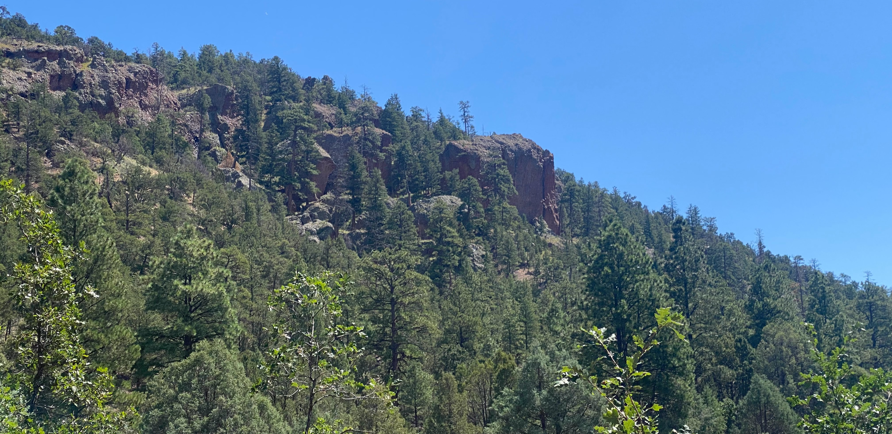

Section 6
Section 6 was undoubtedly the hardest section on the trip. The amount of climbing was insane as we went up and down passes in southern Colorado and northern New Mexico. Despite this, I definitely could tell the last 42 days were contributing to my fitness. I would not be able to do a lot of these upcoming days with my fitness level during the first two weeks.
Day 43
The group was alright with giving me a later start today as I struggled out of bed and packed my bike with a limp. We started at around 10:30. We had one of the highest climbs of the entire route ahead of us today. We would climb up 1000 m. The start ran along highway, eventually turning back into gravel roads. Everyone from the group split up here, we all climbed at our own pace. Brandon and I leap-frogged a few times. After four hours of climbing, we took a nice rest at the top of the pass. My shoes fell off the back of my bike while climbing, so I would have to go through the rest of the trip with just sandals.
Everyone else zoomed ahead as I took my time on the downhill again. We regrouped at a gas station in Sargents, and tried to find a spot to camp for the night. There weren't any clearly marked spots up ahead, so we decided to continue on and stop at whatever spot looked good. We rode along highway for 20 km, then turned back into gravel roads through ranchlands. We found a spot near a creek that didn't explicitly prohibit camping, so we set up there. Joe brought a collapsable camping chair, and offered it to me to use during dinner!
Day 44
The morning was a bit of a struggle for me, sleeping in the tent was a little difficult with my hip. Brandon, Jesse, and Joe were mostly packed by the time I was awake, so they started the day without me, and I took my time getting packed. Although packing up was a little painful, my hip felt fine while biking. I threw on a podcast and started up the hill. I passed along a creek where a few people were fishing, and refilled my water there. After going up and back down the first hill, I saw Jesse resting under a tree at the start of the next climb. He was getting ready to go so we swapped places and I sat down for a break to eat lunch.

After lunch, I pushed myself going up the hill to make sure I could catch up to the group. The climb was steady and the road was in great condition, so before I knew it, I was going down the other side. On the way down, there were some interesting rock formations and cliffs. Once I got service, I got a text from Brandon telling me to hurry up since there was a store closing soon. I made it to La Garita 15 minutes before their store closed and picked up some ingredients for dinner and breakfast. After a quick rest, Brandon, Jesse, and I rode down to a nearby campsite nestled into some cliffs. Joe went on ahead to the next town for a hotel.

We took a site perched up on a rock and got a great view of the sunset. The campground was full of cacti so we had to be careful of where we put our sleeping pads. I almost got snaked again while using a trash can in the dark. The hissing almost gave me a heart attack. I must have walked only inches from it since after looking back, it was directly between the garbage can and me. I felt lucky that it didn't bite!
Day 45
If there was still any part of me that would consider doing the tour divide race, this day beat it out of me. It was Friday and Carley was driving out again to meet me. I suggested a campground that would give me 140km of biking for the day. It would be a big day given the elevation, but we got an early start and if I got ahead of the group today, I could spend a day or two with Carley without worrying about falling far behind the group. We rolled out of the campground at around 9:00 and started off towards Del Norte to meet up with Joe. Brandon had a crash on the way down, going over his handlebars as his front wheel washed out in some mud. His shoulder was hurting but after a few minutes of rest and scraping the mud off his bike and bags, we were back on our way downhill. In town, we met up with Joe at the store and restocked. I told them about my plans for the rest of the day as they were planning lodging for tonight. They wished me luck as I continued out of Del Norte on my own. My optimistic estimate for getting to the campground was around 9:00 - 10:00 pm.
The paved section of the climb was easy enough, but the end of the pavement was the start of a very consistently steep 7% grade section of the climb. Jesse caught up as I stopped for a snack. The guys found a house to stay at a couple kilometers up the road from where we were. He continued uphill as I waited, putting off the climb for another few minutes. Brandon caught up and stopped for a break as well. After one more goodbye, I finally got started on the climb. The road was a little muddy from rain earlier in the day, but the afternoon sun quickly dried it out. Other than the mud, the road was in excellent condition. I broke the climb into 3 sections, taking a rest after each 300m of climbing. This worked out pretty well, and by 6:00 pm, I was at the top. The elevation was almost 3600m, higher than most mountain peaks in Alberta, and this was just a pass.
The road stayed near the top of the pass for a while, going almost 20 km before the proper downhill began. By the time I made it there, the temperature was dropping quickly and daylight was fading. I layered up and enjoyed the rest as the hill gave me 15 free kilometers. Once it got fully dark, I began to worry about wildlife. Fear of the unknown is a common theme that pops into my head whenever I'm on my own in the wilderness at night. Even though the setting is pretty much the exact same, my mind is always imagining threats in the spots not illuminated by my headlamp. I had some music playing, which gave me some peace.
At the bottom of the main descent, I had one more small-ish climb of 200m to take me over the next pass. I had to take all the layers off for the climb, then put them back on at the top. From here, I had 30 km to go to the campsite, and a net downhill to help. I was on the home stretch and could finally get to rest soon. But unfortunately, my tire blew up one kilometer into the descent. The damage on the tire was pretty bad, sealant and air wouldn't be able to fix it, so I got to work on changing out the tire. The pannier rack made the tire change a lot more work than it needed to be. After disassembling the entire rack, I could finally remove the axle, then the wheel. I had to break into my bag of sleeping clothes because I started getting chilly just standing around. I was determined to put the new tire on tubeless so that I wouldn't have to deal with removing the tube and adding sealant later on. After 30 minutes of pumping air into the tire and shaking the sealant around, through a combination of persistence and stubbornness, I finally managed to get the tire to hold air. I was stopped for over two hours, but I had everything back together and was riding again at midnight. I tried letting Carley know that I would be late, but she didn't have service. The rest of the ride was very surreal. I listened to "Lost in the Dream" while I biked the 25 km left to the campground and found a new appreciation for an album that I already really liked. It was perfect for the moment. The occasional reflection from cow eyes staring at me spooked me and kept me awake. At 1:30 am, I pulled into the campsite and searched for Carley's car and the tent. Once I found it, Ukee (Carley's dog) woke up and started barking from inside the tent, which woke Carley up as well. I put my food in the car, and went straight to sleep.
Day 46 (Rest Day)
We spent the day relaxing at the campground. With no plans for hiking any mountains this time, we took a short walk to the nearby lake hoping to swim. There were a few people fishing there so not wanting to disturb the fish, we went to the creek instead. Ukee had some time off leash and spent 30 minutes with the zoomies.
Day 47 (Rest-ish Day)
I wanted to make some progress today so that I could continue riding with the group, but I wasn't sure exactly where I wanted to go next. Carley was planning on driving out to meet me wherever I chose to camp. We went to the nearby Red Bear Haus for breakfast and to plan on where we were going to camp. After breakfast, we decided to set up camp at a site close to the Red Bear Haus. I really did not feel like biking and Carley didn't want to make her drive home the next day any longer by driving farther south. With that decision made, we relaxed at the Red Bear Haus for a while longer, and enjoyed a couple of pints. We took one of the last spots at the campsite and cooked some burgers over the fire.

Day 48
After almost two full days of rest, I was feeling ready to continue on. The group left the Red Bear Haus a day earlier so I had a bit of distance to make up to catch up. We went back to the Haus for breakfast. They heated up some frozen burritos for us. We said our goodbyes and I continued on. A paved climb took me 500m up to warm my legs back up, then broke back off onto gravel roads. A few kilometers from the highway, I saw someone walking through the forest trying to get my attention. She was picking raspberries and wanted to let me know that there were lots! I stopped for a few minutes to pick some.
Shortly after, I crossed the state border into New Mexico. The final border crossing! The quality of the road changed instantly. The NM roads were rough, rocky, and rutted out. Luckily I only had two wheels so I could choose my lines, but even then, there were some sections impossible to bike up. I passed by several trucks and ATV's manoeuvering through the roads.
Later in the day, water was a little sparse. Even at low points where creeks were marked on maps, the water was either still and muddy or non existent. My goal for the day was Hopewell Lake, a state park. I was out of water by the time I made it there, and was disappointed to find that they had no running water at the campground. At least the lake was nearby, so I made my way down there and started filtering and treating the water. While I was there, a fisher approached me and asked about what I was doing. He offered me a Gatorade and some water! I continued on a kilometer past the campground and set up camp beside the road.
Day 49
The start of the day was looking pretty easy when I looked at the elevation profile. Over the next 80 km, I would lose 1000 m of elevation. The roads that I went over today were in much better condition than yesterdays. I went through some tiny towns that were stereotypically in the New Mexico style. I passed through Cañon Plaza, Vallecitos, and El Rito, all filled with several adobe houses. After El Rito, I felt like I was truly in the desert. It was jarring how quickly the landscape changed as the elevation went below 2200 m. There were no trees, just brush and cactus. The paved road was not helping with the high temperatures, but I had a slight downhill through this section and the air passing by me cooled me down.
I made it almost to Abiquiú, then stopped by a cafe for a late lunch. I had an amazing hatch chile burger and a cheesecake. It took under 5 hours to cover 85 km so I was making really good time. During my lunch, I got into contact with Brandon, he was making some repairs on his bike, so he would be in town for a while. We met up by the hotel in town. He met up with a group who was riding the divide with a support van, and managed to catch a ride into Santa Fe with them to bring his bike into a shop. We rode out of town together and started climbing. We left town with lots of water, but were still expecting to fill up somewhere along the way. After a couple hours of climbing, the road descended into a small valley that was slightly more lush than the surrounding landscape. But unfortunately, where there was a creek marked on the map, was some wet mud. It was disappointing, but we still had some water to get us to the next water source. At the plateau halfway through the climb, we stopped to set up camp. We were treated to a gorgeous sunset over a mountain as we set up and had dinner.
Day 50
We started as early as we could to beat the heat and save some water. Although it wasn't long, this was definitely the most challenging climb of the trip, the road was built on slabs of rock, but as the dirt eroded, the rock stayed. The dirt sat about half a foot lower than the rocks, so every time a slab ended or began, we lost a lot of momentum to the bump. It was definitely engaging, but we made distance extremely slowly.
By the time we made it to the top, we were both super frustrated with how much energy we were spending on climbing. Water was also running low. We still had plenty of traversing to do before the next valley, so we struggled on. We kept our eyes out for water. Our standards for water sources dropped as went. Going downhill, Brandon came to a sudden stop in front of me, and I almost crashed into him. There was a small pond of water that a few cows were drinking from 20 meters from the road. We were both out of water, so we were desperate enough to collect and filter some water. We put a lot of trust in our water filters and purifiers for this. Despite the filtering, the water still tasted pretty awful. After filling a liter each, we continued on. After two hours, we finally reached a proper creek. It was such a relief to see clear, running water after the last 24 hours. I filtered some water, then jumped into the creek.

After this, a paved road took us down the rest of the hill into the town of Cuba. We stopped for some mexican food and decided next steps. We wanted to catch up to Joe and Jesse, who were in the next major town: Grants. This was quite far, but we had two routes to choose from. The first would be a repeat of the last day, going over rough dirt roads with no water sources. The second option would be entirely on paved road, but it would add some distance. Not wanting a repeat of the climb we struggled through earlier today, we decided to take the paved option, giving us just about 200 km to Grants. There didn't appear to be many spots for camping along the route, so we decided to call it for the day, stay in Cuba, and get an early start tomorrow morning.
Day 51
We left Cuba before 7:00 and started off on the road to Grants. Luckily, the air was pretty calm today, so we didn't have any winds to battle with. The morning was a little chilly but it didn't take long for the sun to warm everything. The road was surprisingly busy for how remote it was, but got quieter in the mid morning. 80 km in, we stopped for a rest at a convenience store. The temperature kept rising throughout the morning, so we were both intent on continuing on to make the most of the milder temperatures. We rode the next 110 km with minimal breaks, trying to make distance as quickly as possible. I was struggling to keep up with Brandon, but he was okay with leading most of the way. There were a few climbs with cliffs on either side, which paired with the sun, created a giant oven. At 3:30, we finally made it to a major highway, and got some cool drinks at a convenience store. The hotel where Joe was staying was another 10 km away, so we reluctantly got back on the bikes and went the 10 km through town to meet up with Joe.
We finally made it to the hotel and met up with two bikers who rode in with Joe and were also taking the day off in Grants. Joe offered us some snacks, then we took a siesta after nearly 200 km of hard biking. We met up in the evening for dinner, and went to the buffet across the street. We went for seconds, then thirds, then dessert. After dinner, we all were all ready to enter a food coma and recover for the next day.
Continue reading about the seventh, and final section of my trip here here!